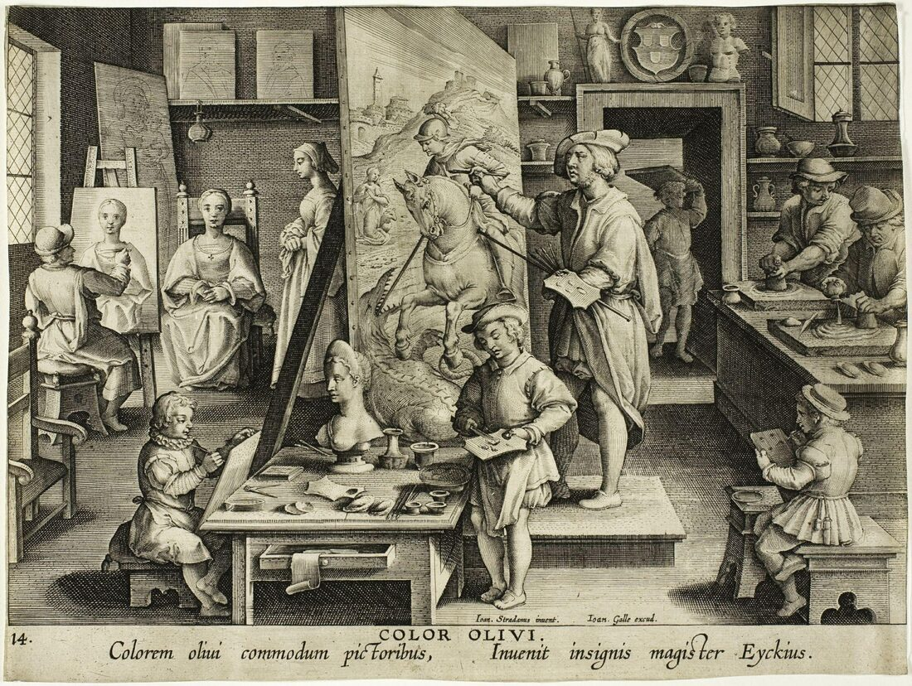
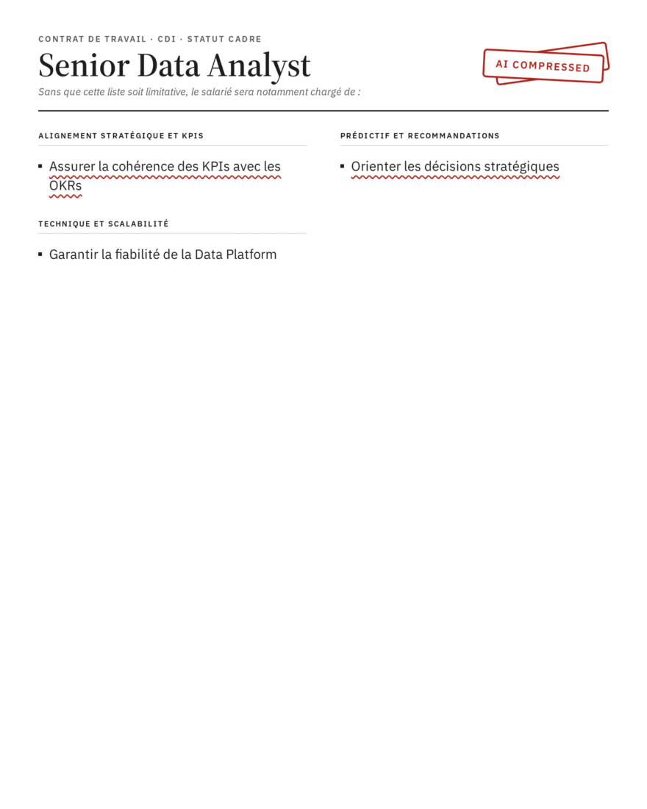
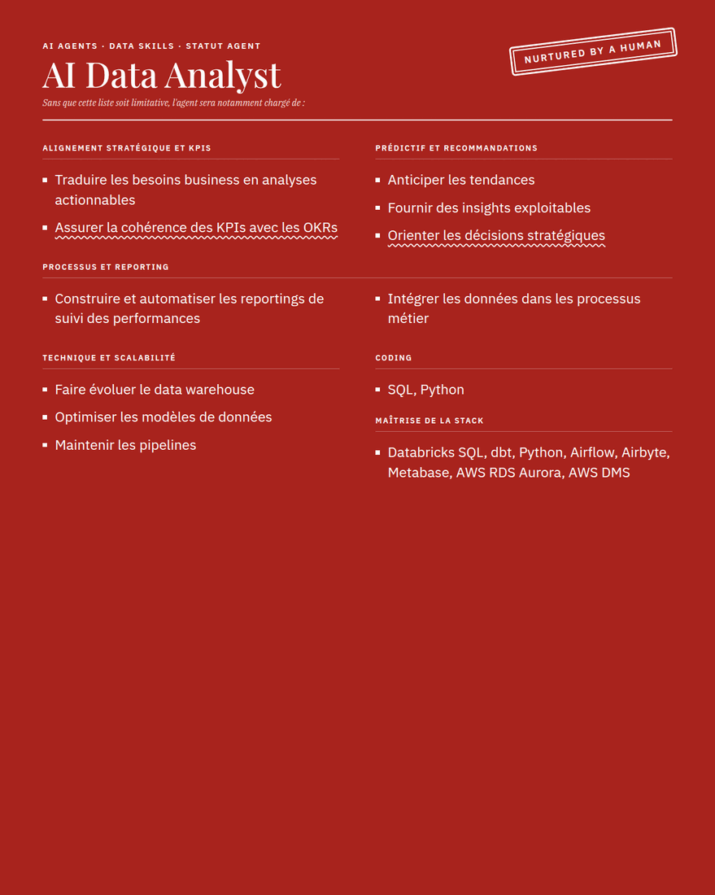
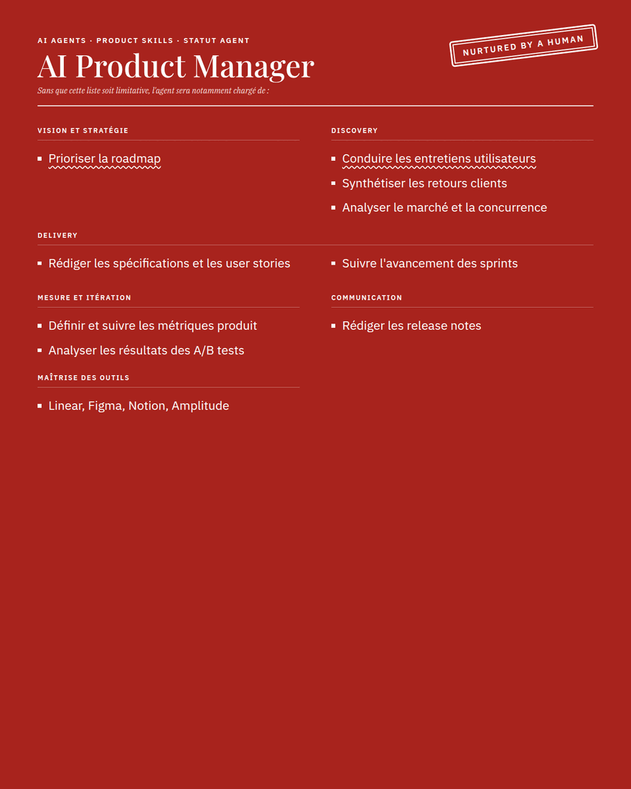
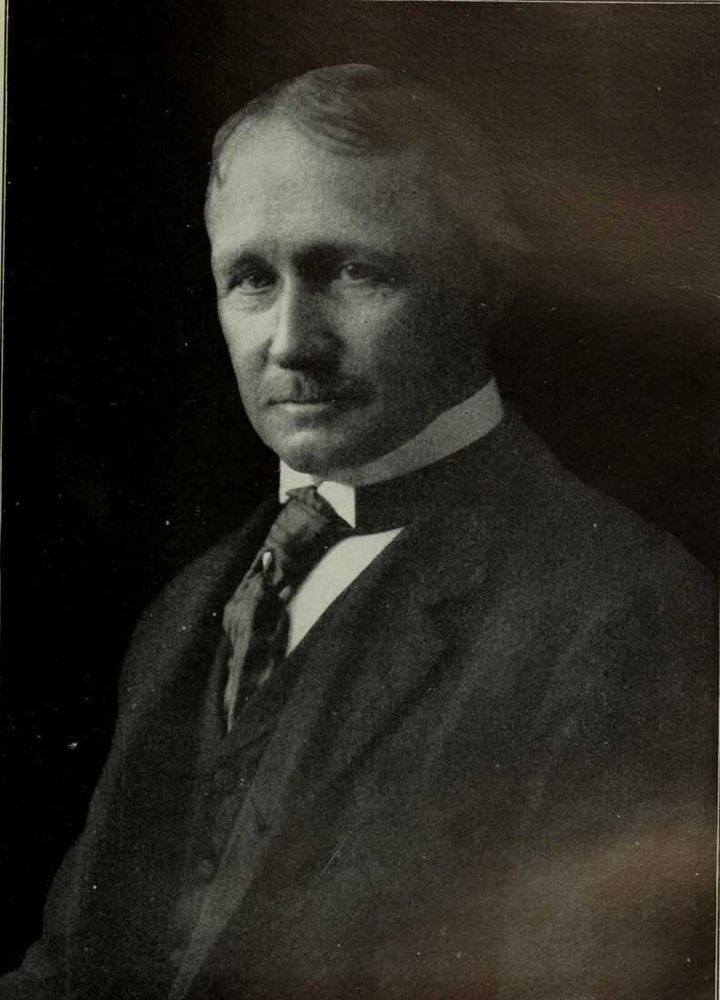
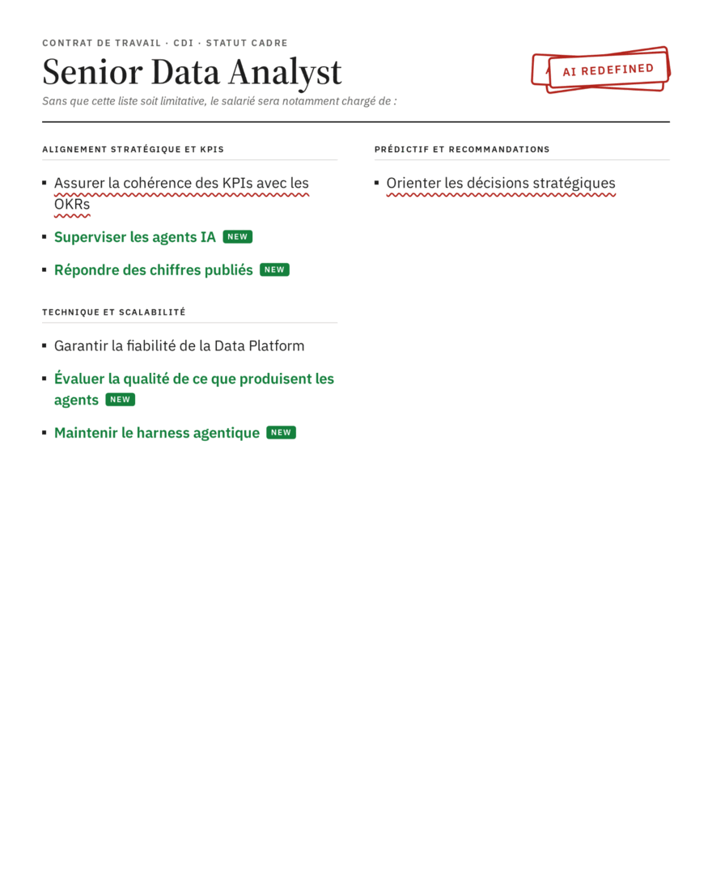

L'IA rendra votre organisation obsolète. Si vous en avez une.
Forward Data Conference 2026 · Grand format
L'IA rendra votre organisation obsolète. Si vous en avez une.
Pendant vingt mois, j'ai déployé la même stratégie agentique dans deux organisations que tout sépare, et j'ai obtenu deux résultats diamétralement opposés.
Par Alexis Blandin · 20 min de lecture
Faites défiler
Ce texte reprend la conférence « AI will make your organization obsolete. If you have one. », donnée le 16 novembre 2026 à la Forward Data Conference. Les fiches de poste qui l'illustrent sont des exemples reconstitués, sans prétention à l'exhaustivité.
Connaissez-vous ce tableau ? Son sujet se reconnaît sans peine, c'est le Baptême du Christ, peint vers 1475, en pleine Renaissance italienne, dans l'atelier florentin d'Andrea del Verrocchio, à la fois peintre, sculpteur et orfèvre. Il serait resté une œuvre parmi d'autres si un détail ne l'avait fait entrer dans la légende.
À l'époque, l'artiste tel que nous l'imaginons n'existe pas encore. Verrocchio est un artisan, maître d'une bottega, cet atelier où tout le monde fait à peu près tout. On y entre enfant pour apprendre à broyer les pigments, à dessiner, à sculpter et à peindre, et quand une commande arrive, le maître répartit le travail, le fond à l'un, les bâtiments à l'autre.

Un atelier de peinture à l'huile vers 1600, gravé d'après Jan van der Straet pour la série Nova Reperta. Chacun tient son poste, mais tous travaillent dans la même pièce.
Le détail en question est l'ange agenouillé à gauche. La légende veut que Verrocchio l'ait confié à son jeune apprenti, et que l'exécution en ait été si parfaite que le maître aurait posé son pinceau pour ne plus jamais peindre. Le style suffit à trahir l'apprenti, qui s'appelait Léonard de Vinci.
L'ange de gauche, attribué au jeune Léonard.
Cette histoire résonne étrangement depuis dix-huit ou vingt mois. Nos agents sont devenus des génies, et chacun connaît désormais un ingénieur qui a cessé de coder, écrasé par son propre Léonard. Vous avez peut-être déjà rencontré le vôtre. La légende de Verrocchio cache pourtant autre chose, et j'y reviendrai à la fin.
Pendant ces vingt mois, j'ai eu la chance de piloter la data de deux organisations que tout sépare, Jolimoi, une beauty tech parisienne, et Urban Sketchers, une ONG américaine présente sur les cinq continents. Dans l'une comme dans l'autre, j'ai eu carte blanche pour déployer à peu près la même stratégie agentique, avec les mêmes outils, et les résultats ont été diamétralement opposés.
Deux terrains de petite taille ne font pas une loi, et je me garderai de toute généralisation, d'autant que nous avons commis notre part d'erreurs dans une discipline aussi jeune que l'IA agentique. Ce récit est celui d'un praticien, qui rapporte ce qu'il a vu.
Mon sujet est l'organisation du travail, qu'il faut se garder de confondre avec l'entreprise. Elle désigne la manière dont des êtres humains s'agencent autour d'un objectif commun, et tout l'appareil de règles, de prescriptions, de procédures et de processus qui sert à structurer, définir, répartir et coordonner. C'est l'obsolescence de cet appareil, à l'ère agentique, qui m'occupe ici.
Premier domino
L'adoption
De sept à deux.
L'histoire de Jolimoi tient d'une rangée de dominos. C'est celle d'une entreprise frappée par une contraction économique sévère, et beaucoup y reconnaîtront une part de leur propre parcours.
Le premier domino tombe avant même l'arrivée des agents, et c'est l'adoption. À son apogée, Jolimoi comptait une centaine de salariés, et l'équipe data sept personnes aux expertises nettement découpées. Chez nous, le data analyst est un profil full stack, qui fait à la fois du data engineering, de l'analytics engineering, un peu de data science, de la BI et, bien sûr, de l'analyse. La contraction est venue par étapes, comme dans tant d'entreprises. À partir de l'été 2025, les départs n'ont plus été remplacés, et l'équipe est passée de sept à deux personnes, ce qu'elle est restée.
L'IA a été accueillie à bras ouverts. Les LLM d'abord, puis les premiers agents capables d'exécuter des commandes et de mener leurs propres recherches, ont absorbé les tâches de ceux qui partaient, jusqu'à ce que deux personnes fassent le travail de sept. Le résultat a dépassé nos attentes, et il faut le dire sans détour, l'IA peut remplacer des personnes. À ce stade pourtant, nous la mettions à notre seul service, un peu égoïstement, pour tenir la charge qui nous incombait.
Deuxième domino
L'accélération
Faire coûte moins cher que planifier.
Le deuxième domino, l'accélération, commence par une bonne nouvelle. À mesure que la qualité des agents progressait, de mois en mois, du temps se libérait, et la tentation de le remplir était trop forte. Une organisation qui n'a pas été pensée pour absorber un tel gain fait ce qu'elle sait faire, elle accélère. Nous avions l'habitude de dire non, et nous avons cessé de le dire. Les sujets se sont accumulés, puis toutes ces tâches que nous n'avions jamais eu le temps de mener, jusqu'à notre vieux backlog.
Tickets dans le backlog
1 000
environpoussés de sprint en sprint
Comme beaucoup d'équipes, nous traînions un backlog depuis des années. Nous y puisions de sprint en sprint, et il enflait malgré tout, encombré de doublons et de sujets jamais traités.
Nous nous en sommes emparés pendant le creux qui suit le Black Friday et précède Noël, presque comme d'un jeu.
Quelques semaines ont suffi pour le ramener à zéro. Pour nous, c'était une étape marquante, mais le reste de l'organisation ne l'a guère remarqué.
Le second effet de l'accélération a été plus troublant, car nous allions désormais trop vite pour nos propres pratiques, des pratiques saines pourtant, qui n'avaient jamais posé problème.
Nos pratiques d'équipe
Release notes hebdomadaires
Spécifications détaillées
Code reviews manuelles
Story points
Sprint de deux semaines
Planning
Faire coûte moins cher que planifier.
Les release notes que nous adressions religieusement chaque semaine aux utilisateurs sont tombées les premières, emportées par un rythme devenu délirant.
Les spécifications détaillées ont suivi, car les agents les rédigeaient mieux que nous, puis les code reviews manuelles.
Le sprint de deux semaines s'est contracté et le planning a disparu. Tout le décorum se délitait, sans que l'accélération nous laisse jamais le temps de remettre l'organisation en question.
Il a fallu se rendre à l'évidence que faire coûtait désormais moins cher que planifier.
Plutôt que de spécifier une idée, nous la livrions, parfois en deux, trois ou cinq versions concurrentes, confiées à plusieurs personnes, y compris à des néophytes, pour voir simplement ce qu'elles donneraient. Le pire est que cela fonctionnait. D'une spécification, il ne restait bientôt qu'une note d'intention, l'équivalent d'un post-it.
Ce gain avait un revers. La production n'était plus un problème, mais il fallait désormais ingérer ce que l'on produisait, et le goulot d'étranglement s'est déplacé de l'analyse vers la relecture, puis vers les métiers, qui ne suivaient plus. Il remontait ainsi, strate après strate, l'organisation que nous avions bâtie.
Les personnes en ont payé le prix. C'étaient encore des humains qui servaient alors d'interface aux agents, et nous ne nous arrêtions jamais. L'image de la machine à sous est connue. On relance, puis on relance encore, il reste toujours une dernière chose à tenter, et l'agent ignore la fatigue. Soucieux de ne pas freiner la vitesse acquise, nous nous sommes enfermés nous-mêmes, et nous en avons été les premières victimes. D'où la question que je pose désormais à ceux qui me parlent de leurs agents : que faites-vous quand ils travaillent pour vous ?
Nous couvrions alors tout le besoin de l'entreprise, et même au-delà, sans que cela se voie, comme un sous-marin sous la surface. Il a fallu un déclic pour que l'organisation en prenne la mesure, et il a duré dix minutes.
Un après-midi de janvier
14h20→14h30
Deux analyses complexes demandées en réunion.
Un après-midi de janvier, à 14h20, notre CTPO nous demande en réunion deux analyses complexes, de quelques dizaines à près d'une centaine de requêtes chacune. Avec nos étapes de vérification et de validation, il fallait d'ordinaire des heures, parfois plusieurs jours.
À 14h30, en sortant de réunion, il trouve les deux analyses livrées, vérifiées et éprouvées par un agent chargé de jouer l'avocat du diable. Toute une insight factory avait été pensée pour ce genre de questions.
Ce fut une claque. Il savait ce que les agents apportaient au code, mais il découvrait ce qu'ils permettaient en analyse, et il a compris aussitôt que le goulot, désormais, c'était le reste de l'entreprise.
Troisième domino
La distribution
Distribuer le geste du data analyst.
Jusque-là, le gain restait personnel et cantonné aux équipes techniques. La contraction se poursuivait, et nous n'étions plus qu'une trentaine dans l'entreprise lorsque le déclic a imposé sa question. Pouvait-on offrir cette capacité, avec cette qualité, à tout le monde ?
Nous avons décidé ensemble de l'étendre à toute l'entreprise, avec une idée que je formulerais en peintre, distribuer le geste du data analyst. L'enjeu dépassait la puissance de calcul, car il s'agissait de donner à chacun la capacité d'être analyste, et l'adhésion a été immédiate.
La première conséquence fut une dérive, visible dans la manière dont on s'adressait à nous. Chaque analyse passait autrefois par l'équipe data, et chacun menait désormais la sienne. La consultation de la BI a chuté sans jamais se redresser, le canal Slack où l'on nous sollicitait est devenu silencieux, et les projets Notion où l'on nous mentionnait se sont raréfiés. La rupture a été brutale. La self-BI, ce graal de tout head of data, s'était réalisée sous nos yeux, et nous nous étions effacés de l'équation.
Ce graal avait un prix, celui de la dépossession. En confiant le geste aux métiers, nous avons perdu une part de notre valeur ajoutée, et certains une part de leur fierté, tandis que les autres en sortaient augmentés d'une compétence que nous venions de leur offrir. Le sachant n'était plus le sachant, et cette petite crise de l'ordre établi a vite pris un visage concret.


Prenons la fiche de poste d'un senior data analyst, telle qu'elle a été signée à l'embauche. Elle ressemble sans doute à celles de votre équipe. Combien d'entre vous ont relu et modifié les leurs depuis 2025 ?
Après l'accélération, voici ce que les agents avaient pris en charge. Je trace ces rayures moi-même, mais elles se sont faites peu à peu, sans que personne ne les décide.
Après la distribution, produire les analyses est rayé, et même les valider. Assurer la cohérence des KPI ou orienter les décisions stratégiques se partage désormais avec les métiers. Il ne reste au bout du compte qu'une ligne, garantir la fiabilité de la data platform, et nous nous sommes demandé si c'était encore le rôle d'un analyste.
À côté est née sa doublure agentique, l'AI Data Analyst, infatigable et toujours efficace, qui prend du poids à mesure que la fiche humaine maigrit.
Cette doublure s'installe ensuite chez les autres, chez le CFO par exemple. Lui voit sa fiche grandir, augmentée de l'agent, tandis que la nôtre ne cesse de rétrécir.
L'effet est cumulatif. Il gagne le CRM et le customer success, du stagiaire au head of CRM, jusqu'à cette personne qui n'appelle plus l'équipe data parce qu'elle est devenue analyste elle-même. Nous étions toujours là, dans les mêmes bureaux, mais on venait moins nous voir, et notre importance rétrécissait avec la fiche. Le métier dérivait.
Vint alors la crise de conscience, et elle a eu un prix, des épisodes de fatigue professionnelle. L'équipe commençait à douter de sa propre utilité, et une phrase entendue à ce moment-là dit mieux que tout ce qui se jouait.
« Mon métier, c'est de faire de l'analyse, pas de passer mon temps à gérer des agents. »
Nous assistions en réalité à la dérive de notre métier de full stack data analyst. Cette phrase a été le déclic de l'étape suivante.
Quatrième domino
La colonisation
Chacun sa doublure.
Le quatrième domino n'a pas vraiment été décidé. Ceux qui avaient vu ce que donnait un métier augmenté ont voulu la même chose pour le leur, pour déléguer, pour en faire davantage, et surtout pour ne pas devenir à leur tour le goulot de l'entreprise. La même logique a gagné tous les métiers. Les gestes de chacun ont été encodés, agentifiés puis distribués à tous, et la dépossession, devenue générale, a au moins rétabli une forme d'égalité des armes.
Donner son savoir revient aussi à céder le pouvoir qui l'accompagnait, et chaque métier dispose désormais de sa doublure. L'analyste récupère des gestes du CFO, et le CFO l'agent de l'analyste. Qui en sort le plus fort ? Est-ce l'analyste qui tient le harness et le contexte, et qui acquiert les compétences du CFO, ou le CFO qui acquiert celles de l'analyste sans avoir la main sur le contexte ? Face à un C-level, l'expérience mise à part, on se bat désormais presque à armes égales, et ceux qui s'abritaient derrière un titre se retrouvent contestés, parfois jusque dans la hiérarchie.

Les doublures de la finance, des sales, du produit et du marketing. À la fin, il y a plus de fiches d'agents que de fiches humaines.
On croit assister à un transfert de compétences, et c'en est un en volume, puisque les fiches des agents comptent désormais plus de tâches que celles des humains. Il dissimule pourtant une perte, une déqualification que l'on nomme skill rot, et un glissement plus profond, de l'individu vers le système, qui emporte avec lui la confiance et la rétention de l'information. C'est un sujet à part entière.
Lorsque le savoir réside dans le système, une question se pose, celle de savoir qui est responsable de quoi. Une petite histoire qui nous est arrivée l'illustre. Nous réalisons une analyse critique, importante pour le business et lourde d'impacts potentiels. Lors d'une division, l'agent retient le mauvais dénominateur, et l'erreur se propage à l'intégralité de l'analyse. L'information remonte jusqu'au board, et la décision est prise.
Qui est coupable ? Qui faut-il accuser :
le modèle choisi ?
le prompt ?
le harness ?
le lab qui a entraîné le modèle ?
l'annotateur du dataset du modèle frontière ?
l'analyste qui avait encodé son geste ?
celui qui a posé la question, ou celui qui a configuré l'agent ?
L'agent ne peut pas l'être, car un agent ne signe rien et ne répond de rien. Tout se joue sur cette question de la responsabilité, et j'y reviendrai.
Deuxième histoire
Urban Sketchers
Il ne s'est rien passé.
La seconde histoire est beaucoup plus courte, et c'est tout son intérêt. Urban Sketchers est une association à but non lucratif animée par une centaine de bénévoles, présente dans quelque 500 villes sur tous les continents, et qui fédère une communauté mondiale de dessinateurs. Tout le monde y travaille en asynchrone, et nous y avons déployé une stratégie agentique sur la même période.
Une telle organisation repose sur un manifeste qui tient lieu de mission, et qui n'a pas varié depuis la fondation. Chacun s'y consacre entièrement, là où, dans une entreprise classique, les équipes se tirent volontiers la bourre.
Le manifeste d'Urban Sketchers, inchangé depuis la fondation.
Les rituels y sont rares, sans sprint ni backlog. Il existe bien des titres, mais rien à défendre, ni territoire, ni budget, ni ego, car la mission dépasse chacun.
Surtout, le bénévolat est un don de temps. En entreprise, le temps qu'on gagne retourne au travail, parce qu'un salarié vend son temps et qu'on attend de lui qu'il occupe celui qui se libère. Un bénévole cherche au contraire à en donner le moins possible au fonctionnement, pour le réserver à la mission, à ses loisirs ou à sa famille. Au lieu de compresser le temps, les agents l'ont donc libéré.
C'est peut-être un peu décevant, mais chez Urban Sketchers, il ne s'est rien passé. Les agents ont été accueillis à bras ouverts, sans la moindre friction, et rien de structurel n'a bougé. Chacun y faisait déjà un peu de tout, comme dans la bottega de Verrocchio, et il n'y avait rien à dissoudre.
Que retenir de ces deux histoires ?
Ce que les agents ont emporté
Travail → système
Rituels → système
Savoir → système
Postes → responsabilités ?
Chez Jolimoi, le travail est entré dans le système, et les rituels avec lui.
Le savoir a suivi, avec toutes ces tâches cognitives routinières qu'on peut encoder.
Il est resté les responsabilités, car des agents capables de raisonner prennent aussi des décisions, et il faut savoir qui répond de quoi. Chez Urban Sketchers, il n'y avait guère que la mission et ces responsabilités, et les agents n'ont rien trouvé à emporter.
De là, une constatation s'impose : nous sommes en train d'infliger aux cols blancs ce que nous avons fait subir aux cols bleus, et c'est peut-être dans cette histoire plus ancienne qu'il faut chercher la suite de la nôtre.
Retour en arrière
La division du travail
De l'épinglerie au bureau des méthodes.
Une planche de l'Encyclopédie de Diderot et d'Alembert montre un atelier d'épinglier, et c'est cette fabrique qu'Adam Smith choisit, en 1776, pour ouvrir La Richesse des nations. Dix ouvriers s'y partagent dix-huit opérations. J'en avais tiré un premier billet, mais le chiffre mérite qu'on s'y arrête.
Épingles par ouvrier et par jour
20
un ouvrier seul, de bout en bout
Un ouvrier seul, qui mènerait l'ouvrage de bout en bout, produirait à peine une vingtaine d'épingles par jour.
Répartis entre spécialistes, dix ouvriers en sortent quarante-huit mille, soit quatre mille huit cents chacun. Le bond tient tout entier dans le passage du généraliste au spécialiste, et il s'est fait sans machine.
Nous ne sommes jamais sortis de cette division du travail, et les fiches de poste montrées plus haut en sont l'héritage direct.
Les usines à agents, ces dark factories et ces insight factories où des agents travaillent et coopèrent entre eux, offrent aujourd'hui aux cols blancs le même bond sur le travail intellectuel, sans même passer par la machine-outil.
Cent trente-cinq ans plus tard, en 1911, Frederick Winslow Taylor pousse la logique d'un cran. Maintenant que l'usine a ses spécialistes, il sépare ceux qui pensent de ceux qui font. On demande à l'ouvrier de cesser de réfléchir et de suivre la méthode, conçue par un bureau des méthodes qui optimise chaque geste pour gagner encore en productivité.

Frederick Winslow Taylor, qui a séparé le penser du faire.
Les machines ont ensuite pris le faire, à l'usine comme au bureau, où les cols blancs côtoient depuis longtemps machines à états et procédures algorithmiques. Ce qui résistait était le penser, que les machines ne savaient pas accomplir, et toute la question des cols blancs tient là. Une machine peut-elle penser à notre place ? On l'a déjà tenté dans les années 80, et on appelait cela des systèmes experts.
Une Lisp Machine CADR, au MIT Museum.
Ce qu'une machine sait faire du penser
Explicite ?
Implicite ?
Data ?
À nourrir sans fin ?
Hallucination ?
Systèmes experts, années 80
Ces systèmes experts tournaient sur des Lisp Machines comme celle du MIT. Ces lourds dispositifs des années 80 et 90 reposaient sur des règles en « si… alors » que des experts encodaient à la main, et ils excellaient sur l'explicite.
L'implicite leur échappait, faute de data pour raisonner. Il fallait les nourrir sans fin, car chaque cas du réel que personne n'avait prévu exigeait une règle de plus.
Les modèles d'aujourd'hui disposent de la data qui leur manquait, et l'implicite s'est ouvert.
En ouvrant l'implicite, nous avons pourtant inventé l'hallucination. Le système expert, quand il ne savait pas, le savait, et il s'arrêtait. L'agent, lui, peut ne pas s'arrêter au bon moment.
Le corpus des modèles restera toujours incomplet, même enrichi de notre propre data, car les données ne sont qu'un proxy du réel, et aucune machine n'a, à ce jour, la capacité d'en saisir l'intégralité. C'est d'ailleurs pour cela que le travail réel résiste toujours aux modèles. Nous consacrons des heures au context engineering pour conjurer l'hallucination, et elle surviendra malgré tout. Il faudra toujours un humain dans la boucle pour nourrir le modèle, et quelqu'un pour répondre de ce qu'il produit.
Pour conclure
Retour à l'atelier
Ce qui reste quand les positions tombent.
Nous sommes donc toujours dans la continuité d'Adam Smith, et la question devient de savoir à quoi ressemblera l'organisation du travail de demain. Je plaide pour un vrai retour à l'atelier. Smith et Taylor nous ont légué quatre pièces qui forment encore la charpente de nos organisations. Il y a la spécialisation, puis la coordination, cette glue inventée pour relier des spécialistes qu'on avait séparés, la séparation du penser et du faire, et enfin la fiche de poste, avec tout ce qu'elle embarque. Les agents les défont une à une.
Ce que Smith et Taylor nous ont légué
SpécialisationProfil holistique
CoordinationLa machine coordonne
Penser ≠ faireQui tient le contexte ?
PositionResponsabilité
Ces quatre pièces structurent encore la plupart des entreprises.
Si chacun peut acquérir les compétences de tous, à quoi bon se spécialiser ? Je l'écris avec de gros guillemets, mais nous l'avons vécu avec l'analyste. Ce sont désormais les agents qui se spécialisent, et les humains redeviennent généralistes, des profils en T, à la fois verticaux et horizontaux.
Les rituels agiles étaient la glue qui faisait tenir des spécialistes séparés, et ils sont tombés un à un. Inutile de tourner autour du pot, la coordination restera à la machine, et il reste aux humains des responsabilités, sur la finance, le CRM ou l'attribution.
Le context engineering est le nouveau bureau des méthodes. La machine pense, mais elle hallucine, et il faut que quelqu'un écrive le contexte qui la tient. Reste à savoir qui.
Reste la fiche de poste, et sur ce point je n'ai qu'une prédiction. Les rôles qui ne répondent de rien disparaîtront.
Le troisième point recèle un risque, celui de rejouer Taylor en déclassant les gens, en leur faisant encoder leur façon de faire pour leur annoncer ensuite qu'ils n'auront plus qu'à exécuter pendant que d'autres réfléchiront pour eux. Je ne crois pas que cela fonctionne. Imposé au fouet, l'encodage produit un contexte faux, et un contexte faux fait halluciner la machine. Ceux à qui l'on demande de fournir la matière de leur propre obsolescence en font vite un théâtre. Les luddites brisaient déjà les métiers à tisser, et rien n'empêche que cette guérilla se rejoue à l'intérieur de nos entreprises. Le seul context engineering qui tiendra sera collectif, porté par ceux qui pratiquent et qui recueillent le réel du terrain.
Le dernier point oblige à regarder ce qu'est un poste. Il soude deux choses, un titre qui dit ce que l'on fait et une signature qui dit de quoi l'on répond. Les agents décollent les deux, en prenant le faire et en laissant la signature à quelqu'un, ou à personne. Une position est un titre sans signature, un poste qui porte un nom, un périmètre et parfois une équipe, sans répondre d'aucun résultat. Elle fonctionnait comme une muraille autour d'une rareté, le temps, et les agents rendent le temps abondant. Si vous dirigez quelque chose sans répondre de rien, c'est exactement ce qu'ils dissolvent.
Ce point soulève une difficulté que je ne veux pas éluder, celle des juniors. Je reste partisan d'en recruter, à condition de leur confier des responsabilités, comme Verrocchio en a confié à Léonard sur ce tableau. Nous le faisons très peu, parce que la responsabilité demeure attachée au titre.

Revenons une dernière fois à la fiche de l'analyste, là où nous l'avions laissée.
Nous avons désormais de nouvelles responsabilités, principalement liées aux agents, qu'il s'agisse de les superviser, de répondre des chiffres, d'évaluer ce qu'ils produisent ou de maintenir le harness. Ce sont toutes des signatures.
De plus, augmentée de la finance, du juridique et du reste, une telle fiche ne tient plus sous son titre. Faut-il parler de staff, de builder, de solver ? Certaines entreprises désignent déjà tous leurs membres comme Members of Technical Staff. Je pencherais pour un mot plus ancien, celui d'artisan.
L'IA rendra votre organisation obsolète. Plus encore, elle rend obsolète ce qu'elle défendait, ses positions.
Voilà l'atelier à recomposer, avec des profils holistiques, une machine qui coordonne, un contexte tenu collectivement et une responsabilité partagée. Un test permet d'en mesurer la distance. Lundi, prenez une fiche de poste, la vôtre ou celle d'un membre de votre équipe, et demandez-vous pour chaque ligne : si un agent s'en charge demain, qui signe derrière ? S'il n'y a personne, c'était une position.
Pour finir, j'aimerais revenir à l'atelier de Verrocchio. L'histoire racontée au début est une légende, écrite des décennies plus tard par un biographe soucieux de fabriquer le mythe de l'artiste face à l'artisan. Verrocchio n'a pas posé son pinceau. Il s'est davantage tourné vers la sculpture, mais il a gardé jusqu'au bout son coup d'œil et son droit de validation, regardant chaque œuvre, y posant une dernière touche et décidant quand elle était achevée. Il répondait de ce qui sortait de son atelier, parce que c'était sa responsabilité.
Andrea del Verrocchio, dans une gravure du XVIe siècle, et l'autoportrait présumé de Léonard de Vinci.
Léonard, dans cette histoire, c'est votre agent. Ce génie apportait dans l'atelier une technique venue des Flandres, la peinture à l'huile, dont il tirera le sfumato qu'il perfectionnera jusqu'à sa mort, et dont l'ange porte déjà la promesse. Il n'a pourtant rien signé. Le tableau est sorti de l'atelier sous le nom de son maître, et Léonard n'était qu'une main du collectif qui a permis cette œuvre.
L'IA rendra votre organisation obsolète, si vous en avez une, c'est-à-dire si elle tient debout grâce à ses positions. L'atelier survivra, tant que quelqu'un répond de ce qui en sort.